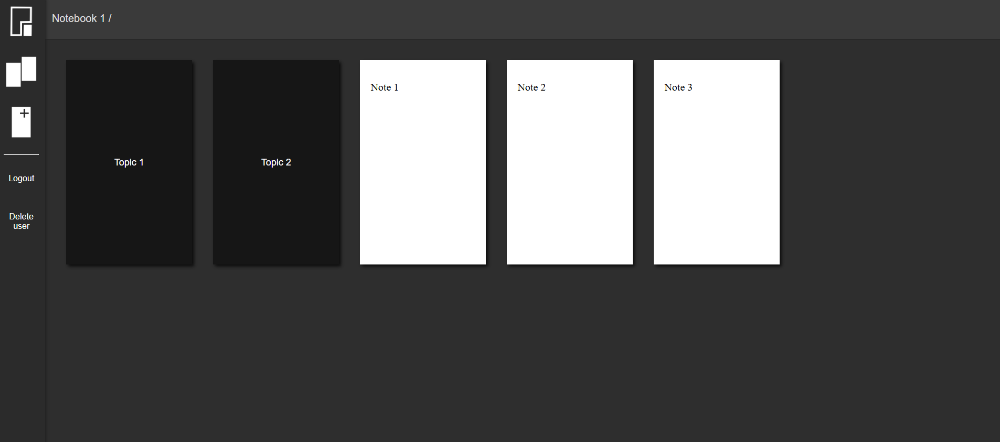
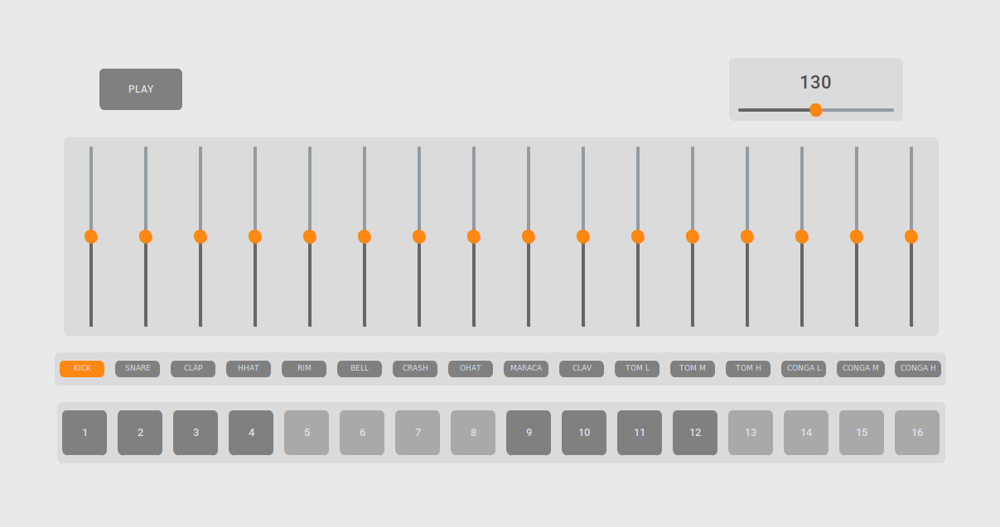

Backend Focused Full-Stack Developer

About
My development journey began in college where I learned the fundamentals of programming, frontend development, and electronic assembly through a degree in Digital Art. A class on physical computing opened my eyes to the flexible possibilities of user experience. Though the main topic was art, a project focused education enhanced my ability to think holistically about my ideas and taught me that design influences every step of the process when creating something. After college I dove deep into backend development through Boot.dev where I learned how data relationships formed the skeleton of every application I had gained proficiency in. Now I take my education in art and programming to create systems that provide a user with expressive solutions to niche problems.
Portfolio
Thoughtwell
Typescript, Vue, Node, Express, PostgreSQL

Thoughtwell is a web application for working out new ideas in flexible digital notebooks. I enjoyed the simplicity and freedom that a regular notebook allowed for, but it became difficult to organize my notes across numerous topics. Rich text editors gave me every feature I could dream of, but the litany of options became distracting.
I required a solution to record ideas in the same spontaneous fashion as I can with a pen and paper while granting myself an organizational capability beyond the physical limitations of the common notebook. I decided to implement the nesting of notebooks to be able to establish a hierarchical structure around a central topic. This allowed me to follow my ideas to any level of specificity while keeping a record of the natural branching of my thoughts.
PY-808
Python, Pygame Mixer, Custom Tkinter

PY-808 is a virtual drum machine faithfully inspired by the Roland TR-808 from 1980. I built this program to be used in place of a metronome to maintain a steady beat while additionally reflecting the rhythmic expression of my playing.
This program is equipped with a 16 channel mixer. With each channel corresponding to a drum sample, patterns for each sample are sequenced and volume controlled independently. The user creates a rhythm by populating a cell in a sequence according to where in a 16th note subdivided measure they would like a drum sample to be played. All 16 individual layers are played concurrently, stacking together to form a drum pattern. With a minimalist design philosophy that gives the user room to explore within meaningful restrictions, PY-808’s functionality can be applied by the budding music producer all the way to the experienced rhythm programmer.